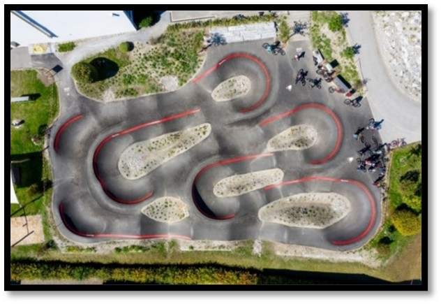
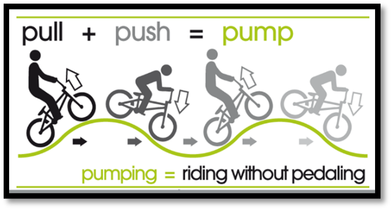
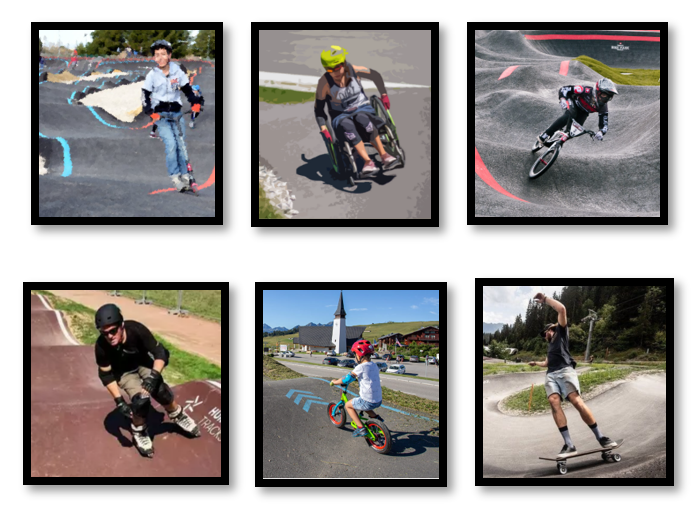
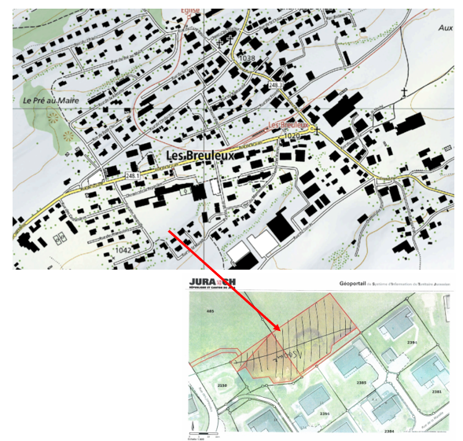
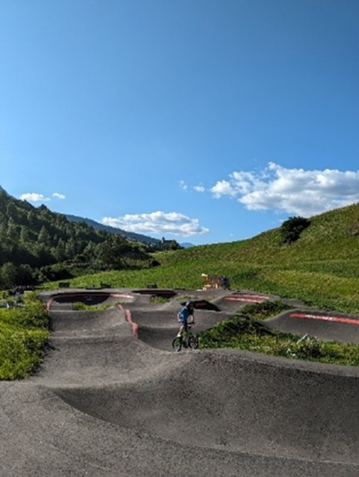

PROJET DE CREATION D’UN PUMPTRACK AUX BREULEUX
Chers amis,Par la création d'un pumptrack aux Breuleux, nous souhaitons apporter à notre région un espace ludique et sportif qui permettra à nos jeunes et moins jeunes de s'amuser, de se dépenser et de repousser leurs limites. Un pumptrack, c'est bien plus qu'un simple circuit ! C'est un lieu de rassemblement, un espace d'échanges et surtout un outil pour encourager l'activité physique par la mobilité douce. C’est également un moyen pour renforcer la confiance en soi et développer des compétences techniques à vélo, trottinette, skate, roller draisienne ou encore en chaise roulante.
Tout le monde y trouvera son compte !
Nous sommes convaincus que ce projet contribuera à dynamiser notre communauté, en offrant à la jeunesse un lieu qui répond à ses besoins et à ses envies. C'est aussi une belle opportunité de promouvoir des valeurs de respect et d'entraide.Avec un budget d’environ 280'000 CHF, nous vous invitons à nous rejoindre dans cette belle aventure. Ensemble, donnons à notre jeunesse un lieu où elle pourra s'épanouir et s'exprimer.
Merci pour votre soutien !
Le Comité
Organisation
Le comité de création du pumptrack est composé de 5 personnes : • Pascal Mercier (Président du vélo club Franches-Montagnes) • Sébastien Froidevaux (Moniteur J+S) • Thomas Salzmann (Moniteur J+S) • Marianne Froidevaux (Monitrice J+S) • Bertrand Choffat Si vous cherchez à nous contacter, vous pouvez nous écrire un mail à l’adresse suivante : pumptrack@vcfm.chUn pumptrack c’est quoi ?
Un pumptrack est un parcours en boucle fermée. Il est constitué de plusieurs bosses et de plusieurs virages relevés. Il peut être en terre ou en asphalte.

Photo aérienne du pumptrack de Flims (GR).
Pour avancer, il n’est pas nécessaire de pédaler ou de pousser. Il suffit de jouer avec le poids de son corps dans le relief de la piste. Il est ainsi possible de prendre de la vitesse et d’enchaîner les tours. D’où le nom : PUMP => pomper et TRACK => piste.

Utilisateurs
Les « pumptrack » asphaltés sont conçus pour quasiment tous les véhicules sur roues non-motorisés. Il profite à un large public de tous âges et de tous niveaux, novice ou expert.

Trottinette, chaise roulante, BMX, roller, draisienne, skateboard, vélo
Encouragement de la mobilité douce et de l’activité physique
La pratique du pumptrack est très ludique. Elle permet d’améliorer sa coordination, son équilibre, ses capacités physiques et son aisance sur un vélo ou tout autre engin à roues « non-motorisé ». Cette infrastructure serait un outil fantastique pour la formation des jeunes cyclistes de la région et d’une grande utilité pour l’école de cyclisme du VCFM. Le cercle scolaire, la population locale ainsi que le tourisme régional en bénéficieraient également.
Emplacement
Nous nous sommes déjà approchés de la commune des Breuleux afin de trouver un terrain approprié à la création de ce projet. La commune nous a répondu favorablement en nous octroyant une parcelle de 1’500 m2 aux alentours des bâtiments scolaires. Étant centré dans le village, cet emplacement est facilement accessible en deux roues et sûr. Il s’agit de la zone hachurée en rouge ci-dessous.

Circuit
Plusieurs propositions de circuit sont en cours d’étude mais le tracé définitif sera validé après que la totalité du financement aura été trouvée.
Règlementation
Un règlement d’utilisation sera mis en place pour garantir la sécurité de tous. Des horaires de fréquentation devront être respectés afin de garantir une bonne cohabitation avec le voisinage. Pour plus de renseignements vous pouvez nous contacter par mail à l’adresse pumptrack@vcfm.ch

On compte sur vous ! Roulez avec nous !